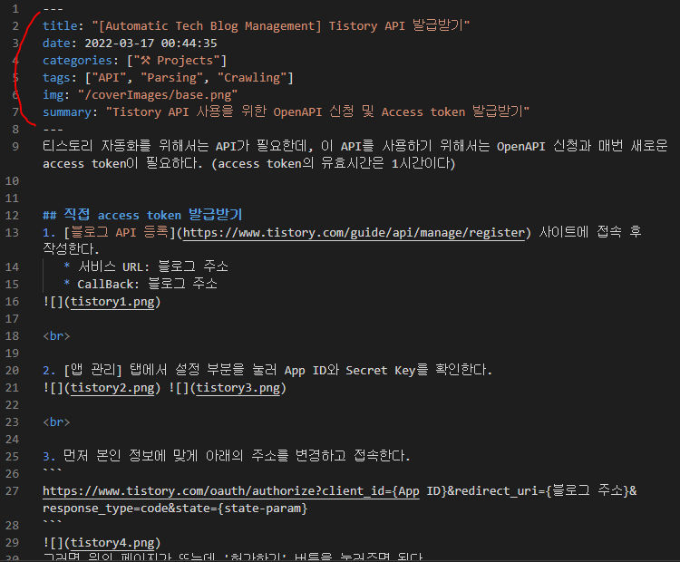
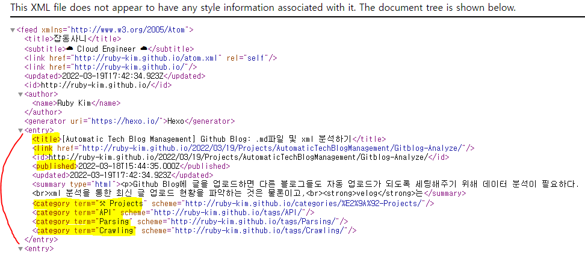
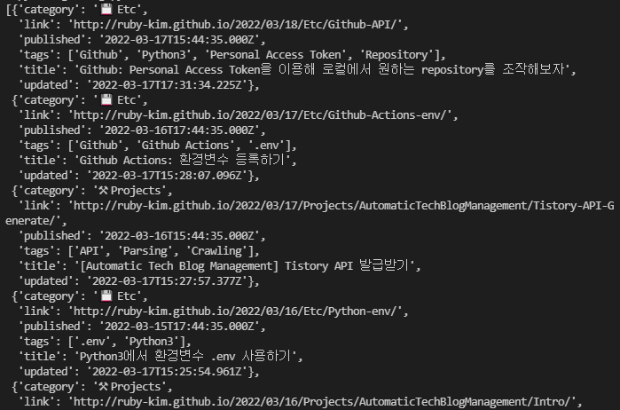
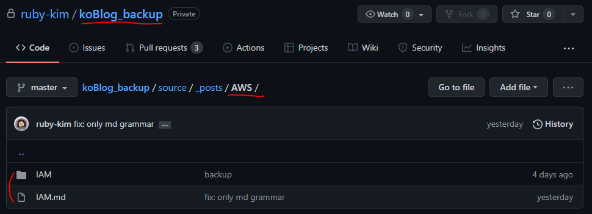
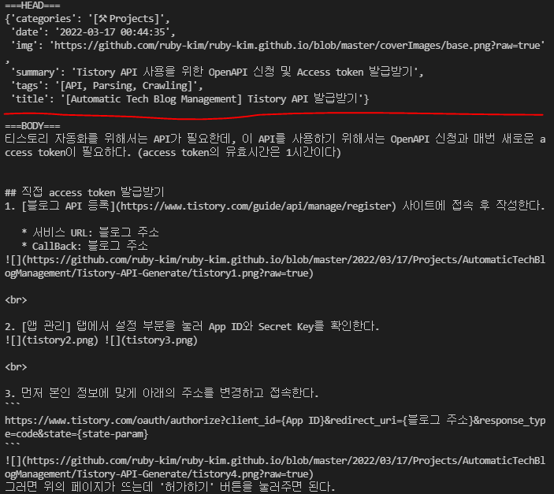

Github blog에 글을 업로드하면 다른 블로그들도 자동 업로드가 되도록 세팅해주기 위해 데이터 분석이 필요하다.
rss는 최신 글 업로드 현황을 파악하는 용도로, markdown은 포스트 내용을 위해 분석할 계획이다.
사전 준비물
Github blog를 분석하기 위해서는 먼저 Personal Access Token을 이용해 Github repository 접근 권한을 가져와야 한다.
아래의 url을 통해 발급부터 세팅까지 해보자.
Github: Personal Access Token을 이용해 로컬에서 원하는 repository를 조작해보자
import modules
```python
import pytz
from bs4 import BeautifulSoup
from datetime import datetime
import requests
import os
from github import Github
```
초기값 세팅
```python
class GithubBlog:
def __init__(self, blogUrl):
self.url = blogUrl
self.xml = blogUrl + "/atom.xml"
self.contents = []
self.curTime = datetime.now(pytz.utc).isoformat()
self.md_head = {}
self.md_body = ""
```
- xml 사이트 분석 후 데이터를 저장하기 위한
contents - markdown(.md) 파일에 대한 데이터를 저장하기 위한
md_head와md_body- hexo로 구현된 블로그의 포스트는 아래와 같이 구성된다. 
- 그 중 빨간색으로 표시간 구간은 포스트 이름, 생성 날짜, 카테고리, 태그 등 다양한 정보들을 설정할 수 있다.
이 부분의 정보가 담길 곳이md_head - 그 외에 나머지 부분은
md_body
Github Blog: xml 분석하기
```python
class GithubBlog:
def __init__(self, blogUrl): (...)
def parsing_xml(self):
html = requests.get(self.xml)
soup = BeautifulSoup(html.text, "html.parser")
for elem in soup.find_all("entry"):
article = {
"title": elem.find("title").get_text(),
"link": elem.find("link").get("href"),
"published": elem.find("published").get_text("published"),
"updated": elem.find("updated").get_text("updated"),
"category": elem.find("category").get("term").replace("\u200d", ""),
"tags": [c.get("term")
for idx, c in enumerate(elem.find_all("category")) if idx != 0],
}
self.contents.append(article)
```
- xml을 살펴보면 다음과 같이 구성되어 있다.
글 자동 생성 및 중복 여부를 파악하기 위해서는 최소 노란색 하이라이트 친 부분의 정보를 가져와야 한다. - xml도 Beautifulsoup을 사용하면 쉽게 파싱이 가능하기에 Beautifulsoup를 사용했다.
- 블로그 카테고리를 보면 앞에 이모지를 사용했는데, 몇 이모지들은 합쳐져서 만들어져서 그런지
\u200d라는 값이 생성되어 빼버렸다.- 원래 결과물: 👩💻
- 파싱 결과물: 👩\ud200d💻
- 혹시 이모티콘 합친 결과물이 안보일 시 Github blog로 와서 보세요
- 해당 코드를 실행 시 결과물은 다음처럼 나온다. 
Github Blog: .md 파일 분석하기
Gihub repository 관련 함수 세팅
```python
# github repository 접근
def get_github_repo(access_token, repo_name):
g = Github(access_token)
repository = g.get_user().get_repo(repo_name)
return repository
# .md파일 내용 불러오기
def get_repo_specific_file_content(repository, file_path):
target_file = repository.get_contents("source/_posts" + file_path)
raw_content = target_file.decoded_content
return raw_content.decode('utf-8')
```
- 위에서 발급받는 Personal Access Token과 해당 함수들을 이용하면 github repository에 접근 및 파일 해독이 가능하다.
raw_content를 decode없이 가져올 시 한글이 전부 깨져 나오기 때문에'utf-8'설정은 필수
Github repository에서 특정 파일(.md)을 찾아 전처리
```python
class GithubBlog:
def __init__(self, blogUrl): (...)
def parsing_md(self, target_path):
repo = get_github_repo("Gihub에서 발급받은 Personal Access Token", "repository 이름")
file = get_repo_specific_file_content(repo, target_path)
self.md_head, self.md_body = preprocess(file, target_path) # preprocess 코드는 다음 항목에 있음
```
- 불러올 repository는 hexo로 구성된 github blog 백업 repository
- 예시로 한번 가져와보면 다음과 같다. 
- 여기서
repository 이름은koBlog_backup - hexo 특성 상 모든 글들은
/source/_posts에 생성된다. 따라서 해당 이미지 기준으로target_path는/AWS/IAM
.md파일 전처리
```python
def preprocess(content, target_path):
def rindex(lst, val):
lst.reverse()
i = lst.index(val)
lst.reverse()
return len(lst) - i - 1
# separate head and body part
content_head_row \
= content[0:content.rfind("---") + 3].replace("---", "").strip().split("\n")
content_body_split_start = rindex(content.split("\n"), "---")
content_body_row = content.split("\n")[content_body_split_start + 1:]
# head preprocessing
content_head = {}
for head in content_head_row:
colon = head.find(':')
key = head[:colon]
value = head[colon + 1:].replace('"', '').replace("\u200d", '').strip()
if key == 'img':
value = f"https://github.com/ruby-kim/ruby-kim.github.io/blob/master{value}?raw=true"
content_head[key] = value
# body preprocessing
content_body = []
target_path_name = '/'.join(target_path.split("/")[1:]).replace(".md", "")
for body in content_body_row:
if '![]' in body and '.png)' in body:
uploaded_date = content_head["date"].split()[0].replace('-', '/')
img_filename = body.replace(".replace(")", "")
body = body.replace(img_filename, f"https://github.com/ruby-kim/ruby-kim.github.io/blob/master/"
f"{uploaded_date + '/' + target_path_name + '/' + img_filename}?raw=true")
content_body.append(body)
return content_head, '\n'.join(content_body)
```
- 위에 hexo 블로그 .md파일 구조를 살펴보면
---로 감싸진 부분에 글의 정보가 담겨있고, 그 아래로는 내용이 있다. - 따라서
---기준으로 글 정보(head)와 글 내용(body)를 분리 후 전처리를 진행해야 한다. - 그 중
---는 총 2개가 있으므로, 오른쪽에 있는---를 찾기 위해 rindex()를 생성했다. - hexo 블로그 .md파일을 잘 살펴보면 이미지 업로드 부분이 있는데, 이대로 바로 데이터를 보내버리면 이미지 로딩이 안되기 때문에 유효한 이미지 url을 생성할 수 있도록 전처리를 진행했다.
- 이미지는 원래 private repository에서 불러오려 했으나, private이라 뒤에 토큰값이 붙어 실제 github blog repository에서 이미지 url을 가져왔다.
- 코드 실행 시 결과물은 다음처럼 나온다.
(맨 처음 사진과 비교해보면 똑같은 내용임을 확인할 수 있다) 
![[Automatic Tech Blog Management] Github blog 포스트를 Tistory에 자동 업로드하기](../../../../../../coverImages/base.png)